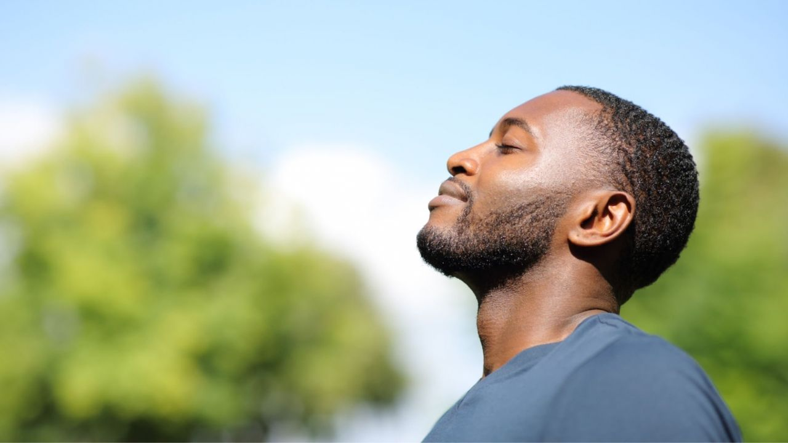

Por que se Livrar do Sedentarismo?
O sedentarismo é um dos maiores vilões da saúde moderna, trazendo consequências negativas que afetam tanto o corpo quanto a mente. Ao se livrar desse estilo de vida inativo, você pode prevenir uma série de problemas de saúde, como doenças cardiovasculares, diabetes tipo 2, obesidade e até certos tipos de câncer. Manter-se ativo ajuda a fortalecer o coração, melhorar a circulação sanguínea e aumentar a capacidade pulmonar, garantindo um corpo mais saudável e resistente.
Além dos benefícios físicos, abandonar o sedentarismo tem um impacto positivo direto na sua saúde mental. A prática de exercícios estimula a liberação de endorfinas e serotonina, substâncias responsáveis pela sensação de bem-estar e felicidade. Isso significa menos estresse, menos ansiedade e até uma redução no risco de depressão. Movimentar-se também melhora a qualidade do sono, a concentração e a produtividade, tornando o dia a dia mais equilibrado e agradável.
Outro motivo importante para deixar o sedentarismo para trás é a melhoria na sua qualidade de vida a longo prazo. Ao incorporar atividades físicas na rotina, você não apenas ganha mais energia para enfrentar os desafios diários, mas também aumenta sua expectativa de vida. Movimentos simples, como caminhar, alongar-se ou praticar esportes, podem fazer toda a diferença para garantir que você aproveite cada fase da vida com disposição, independência e vitalidade. Optar por uma vida ativa é investir em você mesmo.